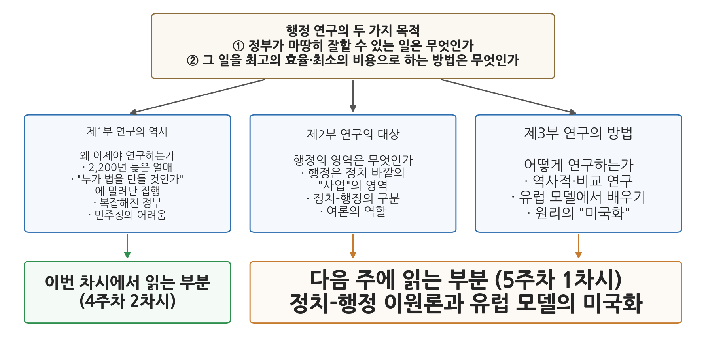

4주차 2차시. 행정학의 탄생 (2): 윌슨의 행정학 연구 I: 왜 행정을 연구해야 하는가
이제는 헌법을 만드는 것보다 그것을 운영하는 것이 더 어려워지고 있다. (우드로 윌슨, 「행정학 연구」, 1887)
이 장에서 배우는 것
1886년 11월, 미국 펜실베이니아의 여자대학 브린마르 칼리지. 서른 살의 무명 강사가 학술지 편집자에게 편지를 쓴다. 자신이 투고한 원고는 "행정학 연구에 대한 준(準)대중적 소개" 정도의 소박한 목표를 가진 글이며, 어쩌면 "너무 미약한" 것일지도 모른다는 내용이었다. 이 자신 없는 편지의 주인공이 우드로 윌슨(Woodrow Wilson), 원고의 제목이 「행정학 연구(The Study of Administration)」다. 논문은 이듬해인 1887년 6월 『폴리티컬 사이언스 쿼털리(Political Science Quarterly)』에 실렸고, 당시에는 별 주목을 받지 못했다. 그런데 꼭 100년 뒤, 미국행정학회는 이 논문의 출판을 "행정학을 하나의 독자적 학문 분야로 여기는 기원"으로 평가하며 창립 기념 사업의 출발점으로 삼았다. 저자 자신이 미약하다고 걱정한 25쪽 남짓의 글이 한 학문의 출생증명서가 된 것이다.
이 장에서는 이 논문의 전반부를 원문 발췌로 직접 읽는다. 1차시에서 본 펜들턴법(1883)의 미국, 곧 실적주의가 갓 제도화되던 그 미국에서 윌슨이 무엇을 보고 무엇을 제안했는지를 따라간다. 구체적으로 다음을 배운다.
- 윌슨이라는 인물과 1887년 미국의 시대 상황
- 윌슨이 제시한 행정 연구의 두 가지 목적
- "헌법을 운영하는 것이 헌법을 만드는 것보다 어렵다"는 명제의 뜻
- 행정 연구가 2천 년 넘게 미뤄진 이유에 대한 윌슨의 진단
- 민주주의(여론의 지배)가 행정 개혁에 던지는 고유한 어려움
이 장은 하나의 질문을 따라 전개된다. "정부가 무엇을 해야 하는지는 그토록 오래 물어 왔으면서, 그것을 어떻게 잘 해낼지는 왜 아무도 연구하지 않았는가?"
2.1 윌슨의 생애와 1887년의 미국을 본다 → 2.2 원전 강독 1: 행정 연구의 필요성과 두 가지 목적을 읽는다 → 2.3 원전 강독 2: 행정 연구가 늦어진 이유와 "헌법 운영"의 명제를 읽는다 → 2.4 원전 강독 3: 민주주의라는 조건, 여론이라는 군주를 읽는다 → 2.5 개념을 정리하고 현대적 의미를 확인한다. 논문 후반부(정치와 행정의 분리, 유럽 모델의 미국화)는 5주차에서 읽는다.
2.1 우드로 윌슨과 1887년의 미국
대통령이 되기 전의 윌슨
우드로 윌슨(1856-1924)이라는 이름은 보통 미국의 제28대 대통령으로 기억된다. 제1차 세계대전 참전을 결정하고, 민족자결주의를 담은 14개 조항을 제시했으며, 국제연맹 구상의 공로로 1919년 노벨 평화상을 받은 인물이다. 3·1 운동에 영향을 준 민족자결주의의 그 윌슨이 맞다. 그러나 이 교재가 만나는 윌슨은 그보다 30여 년 앞선, 전혀 유명하지 않던 시절의 윌슨이다.
1856년 버지니아주에서 태어난 윌슨은 남북전쟁과 재건기의 남부에서 성장했고, 프린스턴 대학과 존스홉킨스 대학에서 공부하며 비교정치와 헌정 연구에 관심을 쏟았다. 1880년대 중반의 그는 브린마르 칼리지의 젊은 강사로 고군분투하고 있었다. 지금은 잊힌 교과서 몇 권을 썼고, 필명으로 쓴 소설은 모두 출판을 거절당했다. 그 시기에 쓴 정치 논문 한 편이 정치학자로서 그의 가장 오래 남는 기여가 되었으니, 그것이 「행정학 연구」다. 훗날 그는 프린스턴 대학 총장과 뉴저지 주지사를 거쳐 대통령이 되고, 미국정치학회 초대 회장도 지낸다.
한 가지 짚어 둘 것이 있다. 윌슨의 유산은 양면적이다. 국제 협력의 이상을 세운 인물이지만, 대통령 재임기에 연방 행정부 안의 흑인 공무원 배제와 차별을 제도화해 아프리카계 미국인의 기회를 좁혔다는 비판을 받는다. 민주주의 확대라는 그의 공적 비전과 모순되는 이 행적은, 사상가를 읽을 때 그의 통찰과 한계를 함께 보아야 한다는 이 교재의 원칙을 다시 일깨운다.
1887년의 미국: 개혁 다음의 질문
논문이 나온 1887년의 미국을 떠올려 보자. 1차시에서 본 대로 펜들턴법(1883)이 시행된 지 4년, 실적주의는 이제 막 걸음마를 떼고 있었다. 산업화와 도시화가 맹렬하게 진행되어 철도·전신 같은 거대 기업이 등장했고, 정부가 이를 어떻게 규제할 것인가가 새로운 문제로 떠오르고 있었다. 실제로 논문 발표 그해에 연방 차원의 철도 규제를 위한 주간통상위원회(Interstate Commerce Commission)가 만들어졌다. 정부가 할 일은 눈덩이처럼 불어나는데, 개혁 운동의 관심은 여전히 인사 문제(누구를 뽑을 것인가)에 머물러 있었다. 윌슨의 논문은 정확히 이 틈을 겨냥한다. 임용을 고쳤으니, 이제 정부의 조직과 일하는 방법 전체를 연구하자는 것이다.
2.2 원전 강독 1: 왜 행정을 연구해야 하는가
이제 논문을 직접 읽는다. 윌슨은 대학에서 행정이라는 과목이 가르쳐지기 시작했다는 사실 자체에서 논의를 시작한다.
"실용적인 과학이 그 지식을 필요로 하지 않는 곳에서 연구되는 일을 나는 거의 본 적이 없다. 그러므로 행정이라는 지극히 실용적인 과학이 이 나라 대학의 강좌로 들어오고 있다는 사실은, 그 자체로 이 나라가 행정에 대해 더 많이 알아야 한다는 증거가 된다. (중략) 행정 연구의 목적은 두 가지다. 첫째, 정부가 마땅히, 그리고 성공적으로 해낼 수 있는 일이 무엇인지 밝히는 것이다. 둘째, 그 마땅한 일들을 어떻게 하면 가능한 한 최고의 효율로, 돈이든 힘이든 가능한 한 최소의 비용으로 해낼 수 있는지 밝히는 것이다. 이 두 문제에 관해 우리에게는 분명 많은 빛이 필요하며, 오직 신중한 연구만이 그 빛을 줄 수 있다. 다만 그러한 연구에 착수하기에 앞서 다음이 필요하다. 첫째, 이 분야에서 다른 이들이 무엇을 해 왔는지, 곧 이 연구의 역사를 살펴보아야 한다. 둘째, 이 연구의 정확한 대상이 무엇인지 밝혀야 한다. 셋째, 이 연구를 발전시킬 최선의 방법과, 연구에 지니고 들어가야 할 가장 명료한 정치적 개념들이 무엇인지 정해야 한다. 이것들을 알지 못하고 정하지 못한 채 출발한다면, 우리는 지도도 나침반도 없이 길을 떠나는 셈이 될 것이다."
무슨 말인가. 첫 문장은 일종의 추리다. 실용적인 학문은 필요한 곳에서만 연구된다. 그런데 행정학이 미국 대학에 등장하고 있다. 그러므로 미국은 행정 지식을 필요로 하고 있다는 것이다. 이어서 윌슨은 행정 연구의 목적을 두 개의 질문으로 압축한다. 첫째는 범위의 질문이다. 정부가 마땅히 할 수 있고 잘할 수 있는 일은 무엇인가. 둘째는 방법의 질문이다. 그 일을 최대의 효율과 최소의 비용으로 해내는 길은 무엇인가.
왜 중요한가. 이 두 질문은 오늘날까지 행정학 개론의 첫 페이지에 놓이는 물음이다. 첫째 질문(무엇을)은 정부의 역할 범위에 관한 것이고, 둘째 질문(어떻게)은 능률에 관한 것이다. 3주차에서 읽은 두 사상가를 떠올려 보자. 벤담은 정부 행위의 목적을 공리로 판정하자고 했고, 클라우제비츠는 목적에 수단을 합리적으로 맞추는 문제를 다뤘다. 윌슨의 두 질문은 이 두 관심을 정부 운영이라는 지평에서 결합한 것이라 읽을 수 있다. 목적에 맞는 일의 범위를 정하고(첫째), 수단의 효율을 극대화한다(둘째).
발췌문의 뒷부분도 눈여겨보자. 역사(어디까지 왔나), 대상(무엇을 연구하나), 방법(어떻게 연구하나). 새로운 학문을 열겠다는 사람이 밟아야 할 정석의 순서다. 실제로 논문은 이 예고 그대로 세 부분으로 짜여 있다. 그림 4-2에서 보듯 제1부가 연구의 역사, 제2부가 연구의 대상, 제3부가 연구의 방법을 다룬다. 이 장에서 읽는 전반부는 제1부에 해당하고, 제2부와 제3부(정치와 행정의 구분, 비교 연구의 방법)는 5주차에서 읽는다.

그림 4-2를 읽는 법은 이렇다. 맨 위가 논문의 출발점인 두 가지 목적이고, 아래 세 상자가 논문의 세 부분이다. 왼쪽(제1부, 이번 차시)은 "왜 이제야 행정을 연구하는가"라는 역사 진단이고, 가운데와 오른쪽(제2부·제3부, 5주차)은 각각 연구의 대상(행정은 정치 바깥의 영역이라는 주장)과 방법(유럽 모델의 비교 연구와 미국화)이다. 이 그림에서 알 수 있는 것은, 이번 주와 다음 주에 읽는 내용이 별개의 글이 아니라 윌슨이 처음부터 예고한 하나의 설계도 위에 있다는 점이다.
2.3 원전 강독 2: 행정학은 왜 이렇게 늦게 태어났는가
가장 늦게 맺힌 열매
제1부에서 윌슨은 이상한 사실 하나를 파고든다. 행정이라는 실천은 정부만큼 오래되었는데, 행정에 대한 연구는 왜 19세기에야 시작되었는가.
"행정학이라는 과학은 지금으로부터 약 2,200년 전에 시작된 정치학 연구가 가장 늦게 맺은 열매다. 그것은 우리 세기의 산물이며, 거의 우리 세대의 산물이다. 그런데 왜 이렇게 늦게 왔는가? (중략) 행정은 정부에서 가장 눈에 잘 띄는 부분이다. 행정은 움직이고 있는 정부이며, 정부의 집행하는 측면, 일하는 측면, 가장 잘 보이는 측면이다. 그리고 행정은 당연히 정부만큼이나 오래되었다."
무슨 말인가. 정치학의 나이를 약 2,200년으로 잡은 것은 고대 그리스(플라톤과 아리스토텔레스)까지 거슬러 올라간 셈법이다. 그 오랜 연구사에서 행정학은 막내, 그것도 한참 늦둥이 막내라는 것이다. 역설은 여기 있다. 행정은 정부의 가장 가시적인 부분, 곧 실행 중의 정부(government in action)다. 세금을 걷고 우편을 나르고 범죄자를 처벌하는, 시민이 매일 마주치는 정부가 바로 행정이다. 가장 잘 보이는 것이 가장 늦게 연구되었다.
왜 그랬는가. 윌슨의 답은 정치사상의 역사를 한 문장으로 요약하는 유명한 대목에 담겨 있다.
"질문은 언제나 '누가 법을 만들 것인가, 그리고 그 법은 무엇이 될 것인가'였다. 또 하나의 질문, 곧 법을 어떻게 하면 계몽된 방식으로, 공정하게, 신속하게, 마찰 없이 집행할 것인가라는 질문은 '실무적 세부사항'으로 밀려났다. 원로들이 원칙에 합의하고 나면 서기들이 알아서 정리할 문제로 치부된 것이다. (중략) 정부의 기능은 단순했다. 삶 자체가 단순했기 때문이다."
무슨 말인가. 2천 년의 정치철학은 정부의 구성을 두고 싸웠다. 국가란 무엇인가, 주권은 누구에게 있는가, 군주정과 민주정 중 무엇이 옳은가. 요컨대 "누가 법을 만들 것인가"였다. 법이 만들어진 다음의 일, 곧 집행은 서기들의 잔무로 여겨졌다. 윌슨은 이것이 철학자들의 변덕이 아니라 시대의 반영이었다고 본다. 과거의 정부는 하는 일이 단순했기에 집행이 문제가 될 일도 없었다. 골칫거리는 언제나 권력의 소재였고, 사유는 골칫거리를 따라간다.
왜 중요한가. 이 대목은 행정학이라는 학문의 정체성을 규정하는 원장면이다. 행정학은 "누가 다스릴 것인가"가 아니라 "어떻게 잘 집행할 것인가"를 묻는 학문으로 태어났다. 여기서 주의할 점이 있다. 윌슨은 집행의 질문이 원칙의 질문보다 중요하다고 말한 것이 아니라, 이제는 집행의 질문도 그 자체의 연구를 요구할 만큼 무거워졌다고 말한 것이다. 그 이유가 다음 발췌에 나온다.
복잡해진 세계, 그리고 헌법을 운영한다는 것
"정부의 임무 가운데 한때 단순했던 것치고 지금 복잡해지지 않은 것은 거의 없다. 정부는 한때 소수의 주인만 섬겼지만 지금은 수십의 주인을 섬긴다. 예전에 다수는 통치를 당하기만 했지만 이제는 통치를 수행한다. 정부가 한때 궁정의 변덕을 좇았다면 이제는 국민의 견해를 따라야 한다. (중략) 이것이 바로 오늘날 행정의 과업들이 신중히 검증된 정책 기준에 맞추어 치밀하고 체계적으로 조정되어야 하는 이유이며, 과거에는 없었던 행정학이라는 과학을 우리가 갖게 된 이유다. 헌법 원리를 둘러싼 무거운 논쟁이 끝난 것은 결코 아니지만, 그것이 행정의 문제들보다 실천적으로 더 급하다고는 이제 말할 수 없다. 이제는 헌법을 만드는 것보다 그것을 운영하는 것이 더 어려워지고 있다."
무슨 말인가. 윌슨이 목격한 19세기 말은 정부 기능의 폭발기였다. 무역과 금융은 복잡해지고, 거대 독점기업이 등장하고, 국가부채가 쌓이고, 노사 갈등이 사회를 흔들었다. 정부는 우편을 넘어 전신을, 철도 규제를, 온갖 새로운 사업을 떠맡고 있었다. 정부가 섬기는 주인도 달라졌다. 군주 한 사람이 아니라 통치에 참여하는 국민 전체가 주인이 된 것이다. 일은 불어나고 주인은 많아진 정부. 이런 정부에서는 좋은 헌법을 설계하는 일 못지않게, 그 헌법 아래에서 정부를 실제로 굴러가게 하는 일이 어려운 과제가 된다.
왜 중요한가. "헌법을 만드는 것보다 그것을 운영하는 것이 더 어려워지고 있다(It is getting to be harder to run a constitution than to frame one)"는 이 논문에서 가장 많이 인용되는 문장이다. 미국은 건국 이후 100년을 헌법 논쟁(연방과 주의 권한, 노예제, 남북전쟁)으로 보낸 나라다. 그 나라의 학자가, 이제 정치의 중심 문제는 헌법의 설계가 아니라 운영이라고 선언한 것이다. 제도를 만드는 것과 제도를 굴리는 것은 다른 종류의 지식을 요구하며, 후자의 지식이 바로 행정학이 채워야 할 자리라는 선언이기도 하다.
윌슨은 국가 임무의 팽창을 이렇게 집약한다.
"국가에 대한 관념은 곧 행정의 양심이다. 국가가 해야 할 새로운 일들이 매일 눈에 들어오는 이상, 다음으로 필요한 일은 그것들을 어떻게 해야 하는지 분명히 아는 것이다. 그러므로 정부가 가는 길을 곧게 펴고, 그 일처리를 더 사업답게 만들며, 조직을 튼튼하게 하고 깨끗하게 하며, 맡은 의무를 다하게 하는 행정학이라는 과학이 있어야 한다."
무슨 말인가. "국가에 대한 관념은 곧 행정의 양심"이라는 문장은 압축적이다. 한 사회가 국가의 역할을 어떻게 생각하느냐(국가에 대한 관념)가 행정이 무엇을 해야 하는지의 기준(양심)이 된다는 뜻이다. 국민이 국가에 기대하는 것이 치안과 국방뿐이라면 행정의 임무는 거기서 끝난다. 그러나 우편·철도·전신처럼 국민 생활의 편의를 국가의 의무로 여기는 관념이 확산되면, 행정은 그 새로운 의무를 수행할 조직과 방법을 갖추어야 한다. 관념이 확장되는 만큼 행정학의 필요도 커진다.
왜 중요한가. 이 문장은 행정이 가치와 무관한 기계가 아님을 윌슨 스스로 인정하는 대목이기도 하다. 행정이 무엇을 얼마나 해야 하는지는 기술이 아니라 그 시대의 국가관이 정한다. 복지국가의 행정과 야경국가의 행정이 다른 이유다. 오늘날 한국에서 돌봄, 기후 대응, 디지털 전환이 행정의 일이 된 것도 국가에 대한 관념이 달라졌기 때문이라 설명할 수 있다.
2.4 원전 강독 3: 민주주의라는 조건
여론이라는 다수의 군주
행정 연구는 왜 미국이 아니라 유럽에서 먼저 발전했는가. 윌슨은 프랑스와 독일의 교수들이 이 과학을 키웠으며, 그것은 중앙집권 국가에 맞게 다듬어진 "외국의 과학"이라고 진단한다. 그리고 미국이 그것을 쓰려면 "사상·원리·목표에서 근본적으로 미국화해야 한다"고 주장한다. 이 주제, 곧 유럽 모델의 수입과 미국화는 논문 후반부의 핵심이므로 5주차에서 본격적으로 읽기로 하고, 여기서는 전반부의 마지막 진단 하나를 마저 읽는다. 미국에서 행정 개혁이 유독 더딘 이유에 대한 진단이다.
"그렇다면 무엇이 방해하는가. 주된 것은 국민주권이다. 민주정에서는 군주정에서보다 행정을 조직하기가 더 어렵다. (중략) 한 걸음이라도 나아가려면 우리는 여론이라는 다수의 군주를 가르치고 설득해야 한다. 왕이라는 단일한 군주를 움직이는 것보다 훨씬 어려운 일이다. 한 사람의 군주는 단순한 계획을 채택해 곧바로 실행한다. 의견은 하나이고, 그 하나의 의견은 하나의 명령이 된다. 그러나 국민이라는 또 다른 군주는 스무 가지나 되는 서로 다른 의견을 가진다. (중략) 여론에 대한 존중이 정부의 제1원리인 곳에서는 실천적 개혁이 더딜 수밖에 없고, 모든 개혁은 타협으로 가득할 수밖에 없다."
무슨 말인가. 왕이 다스리는 나라에서 행정 개혁은 왕 한 사람을 설득하면 된다. 실제로 윌슨은 행정이 가장 발달한 나라로 프로이센을 꼽으며, 스스로를 "국가의 최고 하인"이라 부른 계몽 절대군주 프리드리히 대왕의 단일한 의지가 그 행정을 빚어냈다고 설명한다. 그러나 국민이 주권자인 나라에서 주권자의 마음은 한 사람의 머릿속이 아니라 수백만 유권자의 머릿속에 흩어져 있다. 개혁하려면 그 "다수의 군주"를 가르치고 설득해야 하며, 그래서 민주주의의 개혁은 필연적으로 느리고 타협적이라는 것이다.
왜 중요한가. 이 대목을 민주주의에 대한 불평으로만 읽으면 절반만 읽은 것이다. 윌슨의 논점은 민주주의를 버리자는 것이 아니라, 민주주의라는 조건 아래에서의 행정이야말로 더 정교한 연구를 요구한다는 것이다. 군주정은 연구 없이도 명령으로 행정을 다듬을 수 있었지만, 민주정은 여론을 설득해 가며 행정을 다듬어야 하므로 과학이 더 절실하다. 민주적 정당성과 행정의 효율성 사이의 이 긴장은 오늘날에도 행정학의 중심 문제로 남아 있다. 큰 국책사업 하나를 두고 여론 수렴, 공청회, 예비타당성조사, 정권 교체에 따른 번복이 이어지는 한국의 풍경을 떠올려 보면, "스무 가지 의견을 가진 군주"라는 윌슨의 비유는 낡지 않았다.
윌슨은 프로이센과 프랑스의 발달한 행정을 부러워했지만, 그 역사까지 부러워하지는 않았다. 그는 못 박는다. "프로이센의 행정 기술을 얻기 위해 프로이센의 역사를 갖고 싶지는 않을 것이다. (중략) 훈련받지 않았더라도 자유로운 편이, 예속되어 체계적인 편보다 낫다. 그러나 더 부인할 수 없는 것은, 영혼은 자유롭고 실무는 능숙한 편이 더 낫다는 사실이다." 자유를 지키면서 유능해질 수는 없는가. 이 물음에 대한 윌슨의 답이 논문 후반부의 두 기둥, 곧 정치와 행정의 구분(행정 기술은 정치 원리와 분리해서 배울 수 있다)과 미국화(외국의 장치를 미국의 헌법과 습속으로 걸러서 들여온다)다. 5주차에서 자세히 읽는다.
5주차 예고: 정치와 행정의 분리
논문 후반부에서 윌슨은 이렇게 선언한다. "행정의 영역은 사업(business)의 영역이다. 그것은 정치의 분주함과 다툼으로부터 떨어져 있다." 행정적 질문은 정치적 질문이 아니며, 정치는 행정에 과업을 부여하되 그 직무를 좌지우지해서는 안 된다는 것이다. 훗날 정치-행정 이원론(politics-administration dichotomy)이라 불리게 되는 이 구분은, 1차시에서 본 개혁 운동의 논리(공직 임용에서 당파를 배제하라)를 학문의 원리로 끌어올린 것이다. 이 구분의 내용, 그것이 겨냥한 표적, 그리고 그 후의 운명(교리로 군림하다 비판받고 폐기되기까지)은 5주차 1차시에서 원문과 함께 읽는다.
2.5 개념 정리와 현대적 의미
행정학(public administration)은 정부의 조직과 운영 방법을 체계적으로 연구하는 학문이다. 윌슨의 정식화에 따르면 행정 연구의 목적은 두 가지다. 첫째, 정부가 마땅히 잘할 수 있는 일이 무엇인지 밝히는 것(역할 범위의 질문). 둘째, 그 일을 최고의 효율과 최소의 비용으로 수행하는 방법을 밝히는 것(능률의 질문). 행정은 "실행 중의 정부(government in action)"로, 정부의 집행적이고 가장 가시적인 측면을 가리킨다.
윌슨의 전반부 논지를 세 문장으로 정리하면 이렇다. 첫째, 정치사상은 2천 년 동안 "누가 다스릴 것인가"만 물었고 "어떻게 집행할 것인가"는 잔무로 밀어 두었다. 둘째, 그러나 정부 기능이 폭발적으로 복잡해진 지금은 헌법을 만드는 것보다 운영하는 것이 더 어려워졌으므로, 운영의 과학(행정학)이 필요하다. 셋째, 여론이 지배하는 민주주의에서는 행정을 조직하기가 군주정에서보다 어렵기에, 그 연구는 더욱 절실하다.
이 논지의 현대적 울림은 분명하다. 오늘날 국가 간 성패를 가르는 것은 법과 제도의 설계 못지않게 집행의 역량이라는 인식이 널리 공유되고 있다. 감염병 대유행에서 각국의 성적을 가른 것은 방역 법률의 유무가 아니라 백신을 보급하고 접촉을 추적하는 집행 체계였다. 좋은 제도를 수입하고도 작동시키지 못하는 나라들의 사례는, 외국 제도의 도입이 곧 성공이 아니라는 윌슨의 문제의식과 닿아 있다. 한국 행정이 만들어 낸 쓰레기 종량제나 버스 중앙차로와 환승 체계 같은 성과도, 입법 한 줄이 아니라 요금 정산·수거 체계·단속과 홍보라는 집행의 세부가 쌓여 이룬 것이다. "헌법을 운영하는 것이 더 어렵다"는 문장이 140년 가까이 지난 지금도 인용되는 이유다.
다만 유의할 점도 있다. 윌슨이 말한 효율(최대 효율, 최소 비용)을 행정의 유일한 가치로 읽어서는 안 된다. 윌슨 자신도 행정이 "여론에 민감해야" 하고 자유라는 헌정 원리 위에 서야 함을 거듭 강조했다. 능률이라는 가치가 행정학 안에서 어떻게 왕좌에 올랐다가 어떤 도전을 받게 되는지는 이 교재의 후반부(왈도, 신행정학)에서 다시 만나게 될 것이다.
요약
우드로 윌슨(1856-1924)은 대통령이 되기 훨씬 전인 1887년, 브린마르 칼리지의 무명 강사 시절에 「행정학 연구」를 발표했다. 발표 당시에는 주목받지 못했으나 오늘날 행정학의 기원으로 평가되는 논문이다. 윌슨은 행정 연구의 목적을 두 가지로 정식화했다. 정부가 마땅히 잘할 수 있는 일이 무엇인지 밝히는 것, 그리고 그 일을 최고의 효율과 최소의 비용으로 수행하는 방법을 밝히는 것이다. 그는 행정학이 2,200년 정치학사의 "가장 늦게 맺힌 열매"가 된 이유를 시대에서 찾았다. 과거의 정치사상은 "누가 법을 만들 것인가"에 매달렸고 집행은 실무적 세부사항으로 치부했는데, 그것은 정부의 일이 단순했기 때문이다. 그러나 산업화로 정부 기능이 폭발한 19세기 말에는 사정이 달라져, "헌법을 만드는 것보다 그것을 운영하는 것이 더 어려워지고" 있었다. 국가에 대한 관념이 확장될수록 행정의 임무도 늘어나며(국가 관념은 행정의 양심), 여론이라는 스무 가지 의견을 가진 군주를 설득해야 하는 민주주의에서는 행정의 조직화가 군주정보다 어렵기에 연구가 더욱 절실하다. 유럽에서 자란 이 과학을 미국의 원리로 걸러 들여오는 문제와 정치-행정의 구분은 논문 후반부의 주제로, 5주차에서 읽는다.
토론·복습 문제
4-5. (서술형, 기말 대비) 윌슨이 「행정학 연구」(1887)에서 제시한 행정 연구의 두 가지 목적을 쓰고, 행정 연구가 2천 년 넘게 지체되었다는 그의 진단과 19세기 말에 이르러 행정학이 필요해졌다는 그의 논증을 시대 배경과 함께 설명하시오.
4-6. (원전 해석형) "이제는 헌법을 만드는 것보다 그것을 운영하는 것이 더 어려워지고 있다"는 구절에서, 헌법을 "만드는" 일과 "운영하는" 일이 각각 어떤 종류의 지식과 활동을 가리키는지 구별해 설명하고, 이 명제가 오늘날에도 성립하는지 사례를 들어 논의해 보라.
4-7. (원전 해석형) 윌슨은 "국가에 대한 관념은 곧 행정의 양심"이라고 썼다. 이 문장의 뜻을 풀이하고, 지난 수십 년 사이 한국에서 국가에 대한 관념이 달라지면서 행정의 임무로 새로 편입된 영역을 두 가지 이상 찾아 이 문장에 비추어 설명해 보라.
4-8. (토론형) 윌슨은 민주정에서는 "여론이라는 다수의 군주"를 설득해야 하므로 행정 개혁이 군주정에서보다 어렵다고 보았다. 이 진단을 받아들인다면, 민주주의 국가는 행정의 효율을 위해 여론의 관여를 줄여야 하는가, 아니면 여론을 설득하는 비용 자체를 민주주의의 정당한 비용으로 보아야 하는가. 1차시에서 본 엽관제의 사례(여론과 정당정치가 행정을 지배했던 시대)를 참고하여 토론해 보라.